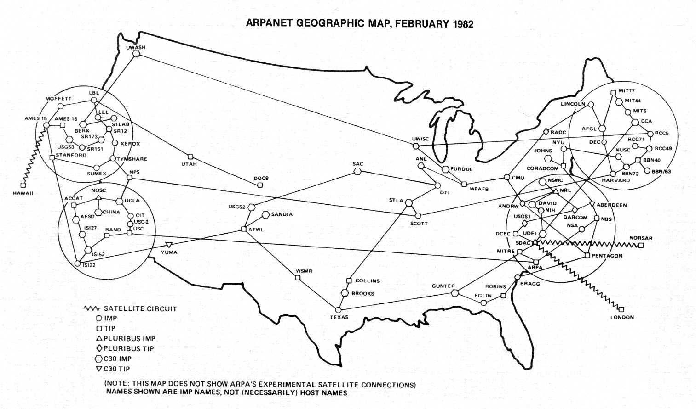

Dwight Eisenhower was an American politician and Army general who served as the 34th President of the United States from 1953 until 1961.

Sputnik was the first artificial satellite launched into space.


ARPA (Advanced Research Project Agency), later renamed DARPA (Defense Advanced Research Projects Agency), was the U.S. agency that funded the earliest research leading to the internet.



"The Internet as we know it really got started in the early 1960s. That was when J.C.R. Licklider, a computer scientist with technology company Bolt, Beranek and Newman (BBN), formulated a visionary concept for the future of computing.
His idea: link computers together across the globe; and anybody near a computer could share information. As it turns out, Licklider had the right idea at the right time. The Cold War had created a need for better communication and information sharing among research institutions.
Source: livescience.com
Tim Berners-Lee developed the first HTML (Hypertext Markup Language) in 1989.
Published text has always been marked up so that the author and publisher would be able to synchronize and lay out a publication the way it has been envisioned. Tim Berners-Lee created a markup language for the web based on these traditional publishing practices.


Marc Andreessen added an image tag to HTML and founded Netscape in 1993.

During the 1990s there were browser wars and HTML was becoming fragmented. Tim Berners-Lee created the W3C (World Wide Web Consortium) to maintain HTML standards and ensure consistency across browsers.
Released in 1997.
Released in 1999.
Released in 2000.
Released in 2014. We are currently in version HTML5, and many people don't see a sixth one coming any time soon, if ever.